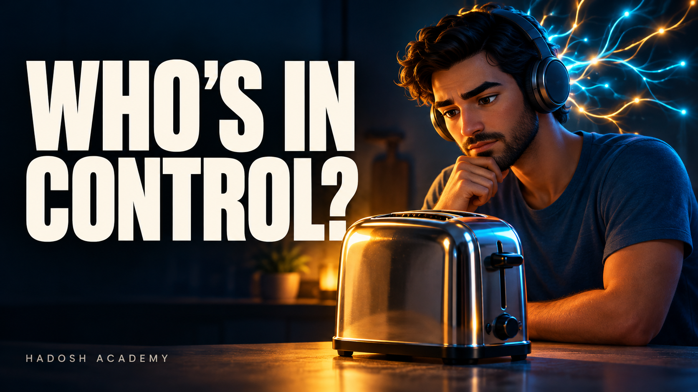
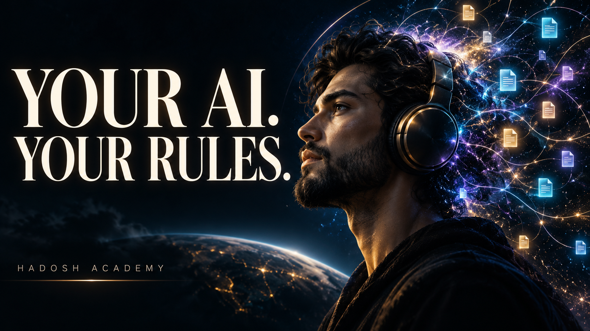

1. Shape a song
Develop the message, lyrics and musical direction. Compare recordings, keep notes, and choose the take that carries the story.
Song-production branch →A song. A visual story. A working example.
From the early web to social feeds and AI agents, our tools keep becoming more capable. Who keeps the final say?

“Leave the final say with me.”
Created and directed by Hadi Nayebi, this Hadosh Academy music video explores ownership through a changing digital world. The technology changes; the person remains at the center of the story.
Two connected workflows
Develop the message, lyrics and musical direction. Compare recordings, keep notes, and choose the take that carries the story.
Song-production branch →Anchor words and rhythm to that recording. Plan scenes, create artwork, animate the layers, and polish the live preview before exporting.
Video-production branch →From an idea to a scene
A small scene description becomes an illustrated plan. That plan is corrected before it becomes backgrounds, individual objects, camera movement and words timed to the music. The repository keeps selected plans and alternate artwork so you can see how the choices connect.


Make something of your own
The project shapes the software. These two dashboards were built around one person’s song: temporary, good-enough tools that changed as the work changed. They show the approach Hadosh Academy explores through Origin dashboards: build the software your project needs, and keep the useful context and patterns.
Give this example to your agent and describe your own project. Together you can create a different dashboard, borrowing the timing, visual planning and review workflows that help you. You do not need to reproduce every feature or turn it into a complete production platform.
The code is open source. Original soundtrack files are separate; the repository explains media requirements and asset provenance. Different recordings need their own timing and review.
Open the adaptation guide
Explore more at Hadosh Academy, or follow the video channel.